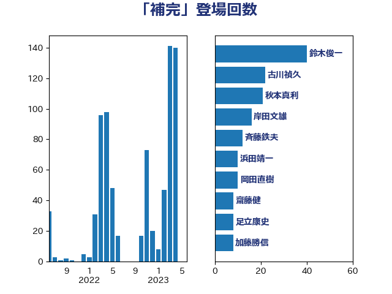

単語「補完」

| 鈴木俊一 | 自由民主党 | 40 回 |
| 古川禎久 | 自由民主党 | 22 回 |
| 秋本真利 | 自由民主党 | 21 回 |
| 岸田文雄 | 自由民主党 | 16 回 |
| 斉藤鉄夫 | 公明党 | 12 回 |
| 浜田靖一 | 自由民主党 | 10 回 |
| 岡田直樹 | 自由民主党 | 10 回 |
| 齋藤健 | 自由民主党 | 8 回 |
| 足立康史 | 日本維新の会 | 8 回 |
| 加藤勝信 | 自由民主党 | 8 回 |
| 谷合正明 | 公明党 | 7 回 |
| 源馬謙太郎 | 立憲民主党 | 7 回 |
| 東徹 | 日本維新の会 | 7 回 |
| 横沢高徳 | 立憲民主党 | 6 回 |
| 青柳陽一郎 | 立憲民主党 | 5 回 |
| 野間健 | 立憲民主党 | 5 回 |
| 石井苗子 | 日本維新の会 | 5 回 |
| 山添拓 | 日本共産党 | 5 回 |
| 前原誠司 | 国民民主党 | 5 回 |
| 赤嶺政賢 | 日本共産党 | 4 回 |
| 田村憲久 | 自由民主党 | 4 回 |
| 漆間譲司 | 日本維新の会 | 4 回 |
| 津島淳 | 自由民主党 | 4 回 |
| 櫻井周 | 立憲民主党 | 4 回 |
| 松本剛明 | 自由民主党 | 4 回 |
| 本庄知史 | 立憲民主党 | 4 回 |
| 後藤茂之 | 自由民主党 | 4 回 |
| 伊波洋一 | 無所属 | 4 回 |
| 中川正春 | 立憲民主党 | 4 回 |
| 高橋千鶴子 | 日本共産党 | 3 回 |
| 馬場雄基 | 立憲民主党 | 3 回 |
| 音喜多駿 | 日本維新の会 | 3 回 |
| 階猛 | 立憲民主党 | 3 回 |
| 酒井庸行 | 自由民主党 | 3 回 |
| 進藤金日子 | 自由民主党 | 3 回 |
| 角田秀穂 | 公明党 | 3 回 |
| 葉梨康弘 | 自由民主党 | 3 回 |
| 萩生田光一 | 自由民主党 | 3 回 |
| 羽田次郎 | 立憲民主党 | 3 回 |
| 石川博崇 | 公明党 | 3 回 |
| 牧山ひろえ | 立憲民主党 | 3 回 |
| 渡辺創 | 立憲民主党 | 3 回 |
| 清水真人 | 自由民主党 | 3 回 |
| 梅村聡 | 日本維新の会 | 3 回 |
| 林芳正 | 自由民主党 | 3 回 |
| 末松信介 | 自由民主党 | 3 回 |
| 小野泰輔 | 日本維新の会 | 3 回 |
| 宮本徹 | 日本共産党 | 3 回 |
| 大口善徳 | 公明党 | 3 回 |
| 堂込麻紀子 | 無所属 | 3 回 |
| 和田義明 | 自由民主党 | 3 回 |
| 北神圭朗 | 無所属 | 3 回 |
| 井野俊郎 | 自由民主党 | 3 回 |
| 高橋光男 | 公明党 | 2 回 |
| 額賀福志郎 | 自由民主党 | 2 回 |
| 阿部弘樹 | 日本維新の会 | 2 回 |
| 長島昭久 | 自由民主党 | 2 回 |
| 金子恭之 | 自由民主党 | 2 回 |
| 遠藤良太 | 日本維新の会 | 2 回 |
| 道下大樹 | 立憲民主党 | 2 回 |
| 西村康稔 | 自由民主党 | 2 回 |
| 芳賀道也 | 国民民主党 | 2 回 |
| 船田元 | 自由民主党 | 2 回 |
| 田村まみ | 国民民主党 | 2 回 |
| 田中健 | 国民民主党 | 2 回 |
| 玉木雄一郎 | 国民民主党 | 2 回 |
| 牧義夫 | 立憲民主党 | 2 回 |
| 片山大介 | 日本維新の会 | 2 回 |
| 渡辺周 | 立憲民主党 | 2 回 |
| 沢田良 | 日本維新の会 | 2 回 |
| 早稲田ゆき | 立憲民主党 | 2 回 |
| 山田勝彦 | 立憲民主党 | 2 回 |
| 小西洋之 | 立憲民主党 | 2 回 |
| 宮本岳志 | 日本共産党 | 2 回 |
| 守島正 | 日本維新の会 | 2 回 |
| 奥野総一郎 | 立憲民主党 | 2 回 |
| 堀井巌 | 自由民主党 | 2 回 |
| 吉田統彦 | 立憲民主党 | 2 回 |
| 吉川赳 | 無所属 | 2 回 |
| 住吉寛紀 | 日本維新の会 | 2 回 |
| 伊藤岳 | 日本共産党 | 2 回 |
| 伊東信久 | 日本維新の会 | 2 回 |
| 三木圭恵 | 日本維新の会 | 2 回 |
| おおつき紅葉 | 立憲民主党 | 2 回 |
| 鰐淵洋子 | 公明党 | 1 回 |
| 鬼木誠 | 立憲民主党 | 1 回 |
| 高良鉄美 | 無所属 | 1 回 |
| 高木宏壽 | 自由民主党 | 1 回 |
| 高木啓 | 自由民主党 | 1 回 |
| 馬場伸幸 | 日本維新の会 | 1 回 |
| 青柳仁士 | 日本維新の会 | 1 回 |
| 青木愛 | 立憲民主党 | 1 回 |
| 長峯誠 | 自由民主党 | 1 回 |
| 鎌田さゆり | 立憲民主党 | 1 回 |
| 鈴木義弘 | 国民民主党 | 1 回 |
| 鈴木宗男 | 日本維新の会 | 1 回 |
| 金子俊平 | 自由民主党 | 1 回 |
| 野村哲郎 | 自由民主党 | 1 回 |
| 重徳和彦 | 立憲民主党 | 1 回 |
| 輿水恵一 | 公明党 | 1 回 |
| 西銘恒三郎 | 自由民主党 | 1 回 |
| 藤原崇 | 自由民主党 | 1 回 |
| 落合貴之 | 立憲民主党 | 1 回 |
| 菅家一郎 | 自由民主党 | 1 回 |
| 茂木敏充 | 自由民主党 | 1 回 |
| 緒方林太郎 | 無所属 | 1 回 |
| 細田健一 | 自由民主党 | 1 回 |
| 紙智子 | 日本共産党 | 1 回 |
| 米山隆一 | 立憲民主党 | 1 回 |
| 篠原豪 | 立憲民主党 | 1 回 |
| 笠井亮 | 日本共産党 | 1 回 |
| 竹内真二 | 公明党 | 1 回 |
| 秋野公造 | 公明党 | 1 回 |
| 福田昭夫 | 立憲民主党 | 1 回 |
| 福島みずほ | 社会民主党 | 1 回 |
| 福山哲郎 | 立憲民主党 | 1 回 |
| 神谷宗幣 | 参政党 | 1 回 |
| 神田憲次 | 自由民主党 | 1 回 |
| 神津たけし | 立憲民主党 | 1 回 |
| 礒崎哲史 | 国民民主党 | 1 回 |
| 石破茂 | 自由民主党 | 1 回 |
| 田村貴昭 | 日本共産党 | 1 回 |
| 田所嘉徳 | 自由民主党 | 1 回 |
| 田名部匡代 | 立憲民主党 | 1 回 |
| 牧原秀樹 | 自由民主党 | 1 回 |
| 浜野喜史 | 国民民主党 | 1 回 |
| 浜田聡 | NHK党 | 1 回 |
| 浅田均 | 日本維新の会 | 1 回 |
| 河野太郎 | 自由民主党 | 1 回 |
| 河西宏一 | 公明党 | 1 回 |
| 池下卓 | 日本維新の会 | 1 回 |
| 江島潔 | 自由民主党 | 1 回 |
| 武井俊輔 | 自由民主党 | 1 回 |
| 横山信一 | 公明党 | 1 回 |
| 森山浩行 | 立憲民主党 | 1 回 |
| 柴田巧 | 日本維新の会 | 1 回 |
| 柳本顕 | 自由民主党 | 1 回 |
| 柳ヶ瀬裕文 | 日本維新の会 | 1 回 |
| 松野博一 | 自由民主党 | 1 回 |
| 松本尚 | 自由民主党 | 1 回 |
| 松山政司 | 自由民主党 | 1 回 |
| 木村次郎 | 自由民主党 | 1 回 |
| 有村治子 | 自由民主党 | 1 回 |
| 星北斗 | 自由民主党 | 1 回 |
| 新垣邦男 | 立憲民主党 | 1 回 |
| 市村浩一郎 | 日本維新の会 | 1 回 |
| 川田龍平 | 立憲民主党 | 1 回 |
| 川合孝典 | 国民民主党 | 1 回 |
| 岬麻紀 | 日本維新の会 | 1 回 |
| 岡本三成 | 公明党 | 1 回 |
| 岡本あき子 | 立憲民主党 | 1 回 |
| 山口那津男 | 公明党 | 1 回 |
| 小熊慎司 | 立憲民主党 | 1 回 |
| 小沢雅仁 | 立憲民主党 | 1 回 |
| 小森卓郎 | 自由民主党 | 1 回 |
| 小林鷹之 | 自由民主党 | 1 回 |
| 小山展弘 | 立憲民主党 | 1 回 |
| 小倉將信 | 自由民主党 | 1 回 |
| 寺田学 | 立憲民主党 | 1 回 |
| 宮崎勝 | 公明党 | 1 回 |
| 大野泰正 | 自由民主党 | 1 回 |
| 大串博志 | 立憲民主党 | 1 回 |
| 塩田博昭 | 公明党 | 1 回 |
| 塩村あやか | 立憲民主党 | 1 回 |
| 塩川鉄也 | 日本共産党 | 1 回 |
| 堀場幸子 | 日本維新の会 | 1 回 |
| 吉川沙織 | 立憲民主党 | 1 回 |
| 古賀友一郎 | 自由民主党 | 1 回 |
| 勝部賢志 | 立憲民主党 | 1 回 |
| 務台俊介 | 自由民主党 | 1 回 |
| 加藤明良 | 自由民主党 | 1 回 |
| 八木哲也 | 自由民主党 | 1 回 |
| 佐々木さやか | 公明党 | 1 回 |
| 伊藤孝江 | 公明党 | 1 回 |
| 伊佐進一 | 公明党 | 1 回 |
| 井上貴博 | 自由民主党 | 1 回 |
| 丹羽秀樹 | 自由民主党 | 1 回 |
| 中野英幸 | 自由民主党 | 1 回 |
| 中根一幸 | 自由民主党 | 1 回 |
| 中村裕之 | 自由民主党 | 1 回 |
| 中川宏昌 | 公明党 | 1 回 |
| 中司宏 | 日本維新の会 | 1 回 |
| 下野六太 | 公明党 | 1 回 |
| 上野通子 | 自由民主党 | 1 回 |
| 三上えり | 立憲民主党 | 1 回 |
| ながえ孝子 | 無所属 | 1 回 |